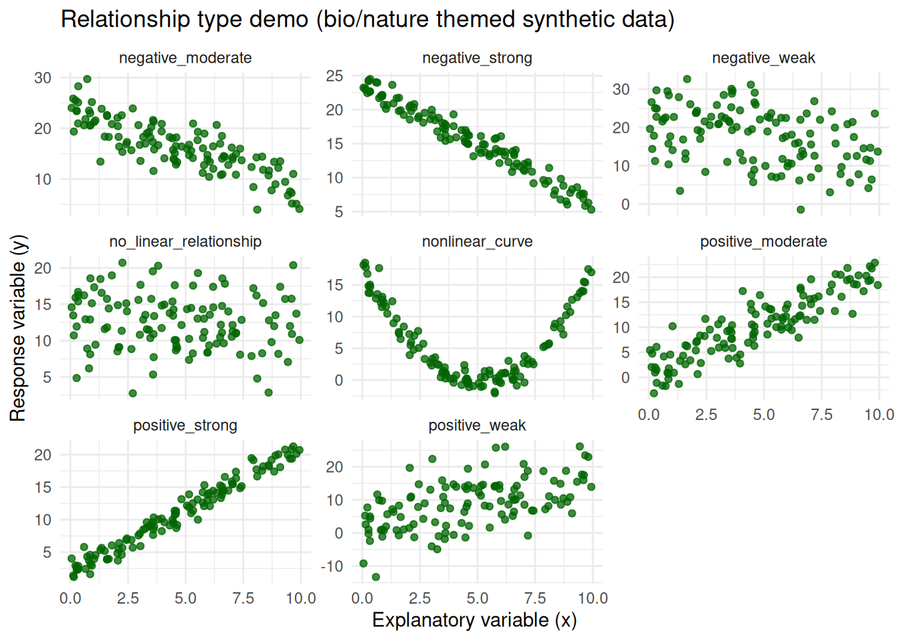

Code
if (!requireNamespace("tidyverse", quietly = TRUE)) {
install.packages("tidyverse", repos = "https://cloud.r-project.org")
}
library(tidyverse)STAT 109: Demo lab for Lectures 35 and 36 (linear + logistic regression)
Open in Colab — after it opens, use Runtime -> Change runtime type and select R if needed.
By the end of this demo lab, you should be able to:
cor().r near 0 reflects weak/no linear association.lm(), make predictions, and compute confidence/prediction intervals with predict().glm(..., family = binomial), predict probabilities, and use a cutoff for classification.if (!requireNamespace("tidyverse", quietly = TRUE)) {
install.packages("tidyverse", repos = "https://cloud.r-project.org")
}
library(tidyverse)set.seed(1212)
n <- 120
x <- runif(n, 0, 10)
d_pos_strong <- tibble(example = "positive_strong", x = x, y = 2 + 1.9 * x + rnorm(n, 0, 1.0))
d_pos_mod <- tibble(example = "positive_moderate", x = x, y = 2 + 1.8 * x + rnorm(n, 0, 3.0))
d_pos_weak <- tibble(example = "positive_weak", x = x, y = 2 + 1.5 * x + rnorm(n, 0, 6.5))
d_neg_strong <- tibble(example = "negative_strong", x = x, y = 24 - 1.8 * x + rnorm(n, 0, 1.0))
d_neg_mod <- tibble(example = "negative_moderate", x = x, y = 24 - 1.6 * x + rnorm(n, 0, 3.0))
d_neg_weak <- tibble(example = "negative_weak", x = x, y = 24 - 1.3 * x + rnorm(n, 0, 6.5))
d_none <- tibble(example = "no_linear_relationship", x = x, y = rnorm(n, 12, 4))
d_nonlinear <- tibble(example = "nonlinear_curve", x = x, y = 0.7 * (x - 5)^2 + rnorm(n, 0, 1.2))
demo_cor <- bind_rows(
d_pos_strong, d_pos_mod, d_pos_weak,
d_neg_strong, d_neg_mod, d_neg_weak,
d_none, d_nonlinear
)cor_table <- demo_cor |>
group_by(example) |>
summarise(r = cor(x, y), .groups = "drop") |>
arrange(desc(r))
cor_table# A tibble: 8 × 2
example r
<chr> <dbl>
1 positive_strong 0.983
2 positive_moderate 0.891
3 positive_weak 0.548
4 no_linear_relationship -0.108
5 nonlinear_curve -0.191
6 negative_weak -0.396
7 negative_moderate -0.832
8 negative_strong -0.978ggplot(demo_cor, aes(x = x, y = y)) +
geom_point(alpha = 0.75, color = "darkgreen") +
facet_wrap(~ example, scales = "free_y") +
labs(
title = "Relationship type demo (bio/nature themed synthetic data)",
x = "Explanatory variable (x)",
y = "Response variable (y)"
) +
theme_minimal(base_size = 11)
Interpretation reminders:
1 or -1 means stronger linear relationship.0 means weak to no linear relationship.+ increasing, - decreasing).nonlinear_curve, do not apply linear-correlation/regression conclusions as if form were linear.Example: predict plant height from sunlight hours.
set.seed(1213)
plant <- tibble(
sunlight_hours = runif(140, 2, 12),
height_cm = 9 + 2.7 * sunlight_hours + rnorm(140, 0, 4)
)
idx <- sample(seq_len(nrow(plant)), size = 0.8 * nrow(plant))
train <- plant[idx, ]
test <- plant[-idx, ]fit_lin <- lm(height_cm ~ sunlight_hours, data = train)
summary(fit_lin)
Call:
lm(formula = height_cm ~ sunlight_hours, data = train)
Residuals:
Min 1Q Median 3Q Max
-10.866 -2.733 0.135 2.919 8.536
Coefficients:
Estimate Std. Error t value Pr(>|t|)
(Intercept) 9.4801 0.9544 9.934 <2e-16 ***
sunlight_hours 2.6719 0.1268 21.075 <2e-16 ***
---
Signif. codes: 0 '***' 0.001 '**' 0.01 '*' 0.05 '.' 0.1 ' ' 1
Residual standard error: 3.836 on 110 degrees of freedom
Multiple R-squared: 0.8015, Adjusted R-squared: 0.7997
F-statistic: 444.2 on 1 and 110 DF, p-value: < 2.2e-16coef(fit_lin) (Intercept) sunlight_hours
9.480129 2.671868 new_x <- tibble(sunlight_hours = 8)
predict(fit_lin, newdata = new_x) # point prediction 1
30.85507 predict(fit_lin, newdata = new_x, interval = "confidence") # mean response CI fit lwr upr
1 30.85507 30.09108 31.61907predict(fit_lin, newdata = new_x, interval = "prediction") # individual PI fit lwr upr
1 30.85507 23.21522 38.49493train <- train |>
mutate(pred = predict(fit_lin, newdata = train),
resid = height_cm - pred)
test <- test |>
mutate(pred = predict(fit_lin, newdata = test))
mse <- function(y, yhat) mean((y - yhat)^2)
tibble(
train_MSE = mse(train$height_cm, train$pred),
test_MSE = mse(test$height_cm, test$pred),
test_R2 = 1 - sum((test$height_cm - test$pred)^2) /
sum((test$height_cm - mean(test$height_cm))^2)
)# A tibble: 1 × 3
train_MSE test_MSE test_R2
<dbl> <dbl> <dbl>
1 14.5 19.4 0.783Example: model probability that a seed germinates from soil moisture.
set.seed(1214)
seed <- tibble(
moisture = runif(180, 5, 45)
) |>
mutate(
p_germ = plogis(-3.2 + 0.14 * moisture),
germinated = rbinom(n(), 1, p_germ)
)
idx <- sample(seq_len(nrow(seed)), size = 0.8 * nrow(seed))
seed_train <- seed[idx, ]
seed_test <- seed[-idx, ]fit_log <- glm(germinated ~ moisture, data = seed_train, family = binomial)
summary(fit_log)
Call:
glm(formula = germinated ~ moisture, family = binomial, data = seed_train)
Coefficients:
Estimate Std. Error z value Pr(>|z|)
(Intercept) -2.93375 0.55135 -5.321 1.03e-07 ***
moisture 0.14066 0.02255 6.236 4.48e-10 ***
---
Signif. codes: 0 '***' 0.001 '**' 0.01 '*' 0.05 '.' 0.1 ' ' 1
(Dispersion parameter for binomial family taken to be 1)
Null deviance: 194.91 on 143 degrees of freedom
Residual deviance: 131.62 on 142 degrees of freedom
AIC: 135.62
Number of Fisher Scoring iterations: 5confint(fit_log, "moisture") 2.5 % 97.5 %
0.09965249 0.18870894 seed_test <- seed_test |>
mutate(
p_hat = predict(fit_log, newdata = seed_test, type = "response"),
y_hat = if_else(p_hat >= 0.5, 1, 0)
)
tibble(
test_accuracy = mean(seed_test$germinated == seed_test$y_hat),
p_at_20 = predict(fit_log, newdata = tibble(moisture = 20), type = "response"),
p_at_35 = predict(fit_log, newdata = tibble(moisture = 35), type = "response")
)# A tibble: 1 × 3
test_accuracy p_at_20 p_at_35
<dbl> <dbl> <dbl>
1 0.972 0.470 0.880cor() and scatterplots to summarize linear association only.lm() + predict() for linear prediction and intervals.glm(..., family = binomial) for binary outcomes and probability prediction.